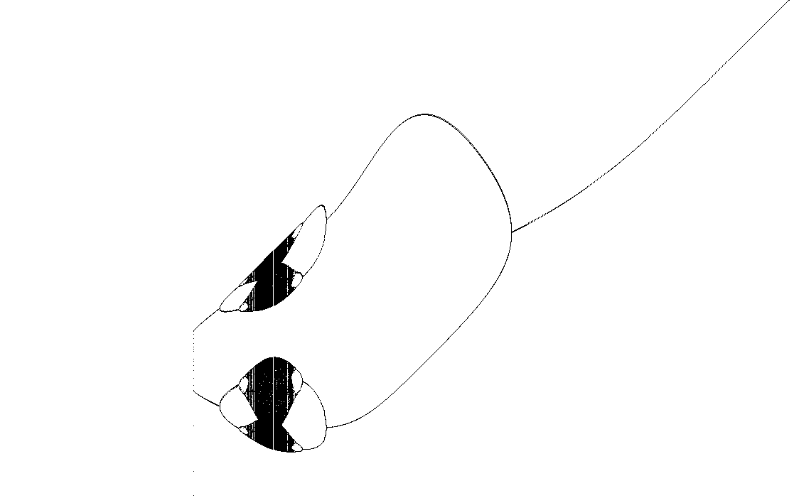

Fractal gallery
Gauss Map
A one-dimensional orbit painted across parameter space.
This map follows the recurrence \(x_{n+1}=e^{-a x_n^2}+b\). It sweeps through values of \(b\), plotting where the orbit lands after many iterations.

What to try first
Read the horizontal axis as the parameter \(b\), and the vertical direction as the values visited by the orbit.
Increase iterations to make the attractor denser.
Compare with the Duffing map: both draw accumulated orbit points rather than coloring every pixel independently.
Mathematical notes
The recurrence
The render fixes \(a=4.90\), starts with \(x=0.25\), and iterates \(x_{n+1}=e^{-a x_n^2}+b\). For each horizontal pixel, \(b\) changes, and the visited \(x\) values are plotted onto the image.